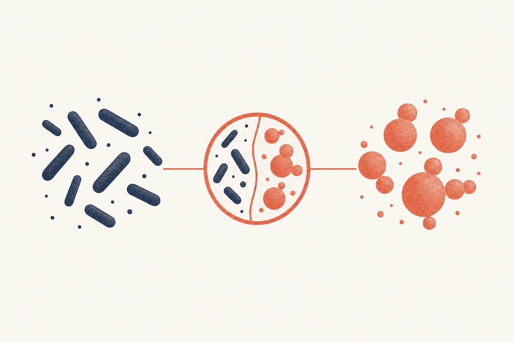

Key Takeaways
- BV is a bacterial overgrowth treated with antibiotics; a yeast infection is a fungal overgrowth, usually Candida albicans, treated with antifungals. They are opposite problems with opposite treatments.[1][5]
- Vaginal pH is the single most reliable discriminator: BV pushes pH above 4.5, while yeast leaves it at 4.5 or below.[3]
- The discharge tells a story too. BV is thin, gray, and homogeneous with a fishy odor, while yeast is thick, white, and clumpy ("cottage cheese") with little odor.[3][5]
- Itching is the divider on the other axis: intense itching is the hallmark of yeast and is usually mild or absent in BV.[5]
- Both are common. In a large clinic sample, 31 percent tested positive for BV and 28 percent for yeast, so even experienced patients cannot reliably self-diagnose.[8]
- Most BV is asymptomatic (about 84 percent), while yeast almost always announces itself with itching and discharge, which is partly why the two get confused.[4]
- Treatments do not cross over. Over-the-counter antifungals will not treat BV, and you cannot buy a BV antibiotic over the counter in the U.S.[10]

Few clinical questions come up as often as the difference between bacterial vaginosis and a yeast infection. The two conditions share a body part, can both change the discharge, and are often doused in the same over-the-counter remedies, but they are biologically opposite problems that require opposite treatments. This guide walks through each point of difference so you can recognize which one you are likely dealing with, and, more importantly, why a proper test beats a guess every time.
One note on scope. This guide owns the bacterial vaginosis side of the comparison in detail. The yeast side, including fluconazole dosing, recurrent yeast management, and home remedies, belongs to our yeast infection pillar and its satellite pages, linked where relevant below.
The Core Difference in One Paragraph
Bacterial vaginosis is a bacterial problem. In BV, the Lactobacillus species that normally keep the vagina acidic decline, and a mix of anaerobic bacteria, including Gardnerella vaginalis and Atopobium vaginae, overgrow and raise the pH.[2] A yeast infection is a fungal problem. In vulvovaginal candidiasis, Candida, most often Candida albicans, overgrows and causes inflammation of the vulva and vagina.[5]
This distinction is not academic. BV responds to antibiotics such as metronidazole, clindamycin, and secnidazole.[1] Yeast responds to antifungals, including topical miconazole and clotrimazole and oral fluconazole.[5] Using the wrong class does nothing, which is precisely why so many self-treated infections never resolve.
pH: The Fastest And Most Reliable Discriminator
If clinical teaching had to pick one test to separate the two, it would be vaginal pH. A healthy acidic vagina sits at a pH of 4.5 or below, maintained by lactobacilli. Yeast infections do not disrupt this acid environment, so pH stays at 4.5 or lower.[5] BV, in contrast, is defined in part by a pH above 4.5, because the BV associated anaerobes thrive in and further create a more alkaline environment.[3]
This is also why home pH strips, widely available in pharmacies, are one of the few legitimate at-home tools for these symptoms. A reading above 4.5 makes BV more likely and yeast less likely, and a reading at or below 4.5 points the other way. The result is suggestive, not diagnostic, but it is a genuinely useful signal.[3]
Symptom by Symptom
The two conditions present with overlapping vocabulary, discharge, odor, and itch, but the emphasis of each is different. A side-by-side of the classic features is the fastest way to orient.
| Feature | Bacterial vaginosis | Yeast infection |
|---|---|---|
| Discharge | Thin, gray or off-white, coats walls | Thick, white, lumpy |
| Odor | Fishy, stronger after sex or menses | Little or none |
| Itching / irritation | Mild or absent | Intense, often the main complaint |
| Vulvar redness / swelling | Usually none | Common, sometimes with fissures |
| Vaginal pH | Above 4.5 | 4.5 or below |
| Burning with urination | Occasional | Common (external, from rubbing) |
The single most useful heuristic: if itch dominates and there is no odor, think yeast. If a fishy odor dominates and itching is minimal, think BV.[5] Neither rule replaces testing, but the emphasis of symptoms is a strong clue.
Reading the Discharge
Discharge is the feature patients notice first, and it differs in both texture and timing. BV produces a thin, homogeneous, grayish white discharge that often evenly coats the vaginal walls, with the whiff test, a fishy odor released when potassium hydroxide is added, as one of its four diagnostic criteria.[3] Yeast produces a thick, white, curd-like discharge that patients routinely describe as resembling cottage cheese.[5]
Color is less reliable than texture. Both can look white, so do not anchor on color alone. Texture, odor, and pH together are far more informative than any single visual feature. For a detailed look at what BV discharge is and is not, see our BV discharge guide.
How Common Each Is
Both conditions are extremely common, which is itself a reason the confusion is so widespread. In a large retrospective study of over 50,000 attendees at a sexual health clinic, 31 percent tested positive for BV and 28 percent for vulvovaginal candidiasis at their first annual test, and the positivity of both rose over the study decade.[8] In the national NHANES survey, BV was found in 29.2 percent of U.S. women aged 14 to 49, most of whom had no symptoms.[4]
Yeast is also a near universal lifetime experience for a distinct reason: an estimated three quarters of women will have at least one episode of vulvovaginal candidiasis in their lifetime, versus a smaller share who go on to the recurrent, four or more episodes per year pattern.[5][7]
What Triggers Each
The triggers that set off the two conditions are almost mirror images, which is another way to reason about which one you are dealing with. BV is consistently linked to things that disrupt the protective lactobacilli or raise vaginal pH: a new or multiple sexual partner, intercourse without condoms, and douching.[3][4] Smoking and the absence of hydrogen peroxide producing lactobacilli are also risks.[4] Yeast, by contrast, is triggered by conditions that feed Candida: broad spectrum antibiotic use, high estrogen states such as pregnancy and combined hormonal contraception, uncontrolled diabetes, and any degree of immune compromise.[5]
| Trigger | Bacterial vaginosis | Yeast infection |
|---|---|---|
| New or multiple sexual partners | Strong trigger | Not typical |
| Antibiotic use | Not a trigger | Major trigger |
| Douching | Strong trigger | Irritates but not a classic trigger |
| High estrogen (pregnancy, hormones) | Mild | Strong trigger |
| Uncontrolled diabetes | Not specific | Strong trigger |
There is a telling asymmetry in the table. Antibiotics are a major yeast trigger but do not trigger BV, because the two problems sit on opposite sides of the microbial balance. This is also why, when a woman finishes antibiotics for BV and then develops itching and thick discharge, the reflex thought of treatment failure is usually wrong; the antibiotic worked on the bacteria and opened the door for yeast. Recognizing the trigger pattern often tells you which condition you are in before any test does.
How Each Is Diagnosed
The two conditions are confirmed with different tests, and knowing the method helps explain why a guess is risky. BV is diagnosed clinically with the Amsel criteria, which require at least 3 of 4 findings: thin homogeneous discharge, vaginal pH above 4.5, clue cells on saline microscopy, and a positive whiff test when potassium hydroxide is added to the discharge.[3] In the laboratory, the Nugent score grades a Gram stain from 0 to 10, with a score of 7 to 10 indicating BV.
Yeast is confirmed by microscopic evidence of the fungus: a potassium hydroxide preparation that dissolves the background cells and reveals budding yeast cells and hyphae or pseudohyphae, sometimes with a saline wet mount.[5] A provider will often note vulvar redness and a normal pH at the same visit. In settings where microscopy is not available, both conditions, plus trichomoniasis and other sexually transmitted infections, can be detected from a single vaginal swab sent as a molecular panel.[1]
The practical upshot is that a pH result plus a swab resolves almost the whole question in one visit, and self-collected swabs now make that possible through telehealth without an in-person exam in many cases. Given that most women who self-treat choose the wrong product, this single visit is usually the fastest route to feeling better.
Recurrence: A Key Behavioral Difference
Here the two conditions diverge sharply and in a way that matters for how you manage them. BV recurs relentlessly: 58 percent of women have BV return within 12 months of treatment, driven by biofilm formation and the failure of antibiotics to restore the protective lactobacilli.[9] Yeast, in contrast, becomes recurrent (four or more episodes in a year) in a much smaller share of women, estimated at roughly 5 to 8 percent, and recurrent yeast is managed differently, often with episodic or weekly fluconazole suppression.[7]
This asymmetry is clinically important. If your symptoms come back within weeks, month after month, the odds favor BV rather than recurrent yeast, especially if the odor is present, and the solution is a suppression strategy, not another round of antifungals. If instead you get discrete, itchy, odor-free episodes a few times a year, that is the yeast pattern, and fluconazole based management may be appropriate.[7][9]
| Recurrence measure | Bacterial vaginosis | Yeast infection |
|---|---|---|
| Returns within 12 months | 58 percent | Not defined the same way |
| Recurrent disease threshold | 3 or more episodes a year | 4 or more episodes a year |
| Share who become recurrent | Most treated women recur | About 5 to 8 percent |
| Pattern | Frequent, sometimes within weeks | Discrete episodic flares |
Can You Have Both at Once?
Yes, and it is more common than the tidy tables suggest. Antibiotics for BV are a known trigger for secondary yeast overgrowth, because broad spectrum antibiotics can suppress the bacteria that normally compete with Candida.[1][5] A woman treated for BV who shortly after develops itching and thick discharge has not failed treatment; she has simply traded one condition for the other, a known side effect that clinicians warn about in advance.
The reverse is less common, but co-infection with trichomoniasis, the third major cause of vaginitis, is worth keeping in mind because trichomoniasis also involves discharge and odor and requires a different treatment entirely. This is the strongest argument for a rapid diagnostic panel when symptoms are mixed or recurrent rather than assuming it is one thing. For detail on that third condition, see our master guide and the relevant STI pages.
The Third Cause: Trichomoniasis
BV and yeast are not the only two things that cause discharge and odor, and leaving out the third major cause is a common reason symptoms do not clear. Trichomoniasis is a sexually transmitted infection caused by the protozoan Trichomonas vaginalis. It classically produces a frothy, yellow green, malodorous discharge with vulvar irritation, and, like BV, it raises vaginal pH above 4.5.[1]
The key difference is that trichomoniasis is a true infection with a single pathogen, unlike BV, and it is treated with a specific nitroimidazole, metronidazole or tinidazole, with sexual partners treated at the same time to prevent reinfection.[1] Because its discharge overlaps with both BV and yeast, and because it can be present alongside either, a swab panel that covers all three is the efficient way to sort a mixed or persistent picture. This is one reason the refrain throughout this guide is the same: when it is not obvious, test rather than guess.
How Treatment Differs
BV treatment is prescription only in the United States. The CDC regimens are metronidazole taken by mouth or as a gel, clindamycin cream, or the single-dose secnidazole.[1][10] There is no effective over-the-counter BV treatment. Yeast, by contrast, is one of the few infections a person can self-treat, with miconazole, clotrimazole, and tioconazole available without a prescription in short courses, and oral fluconazole available by prescription for more severe or recurrent cases.[5]
| Treatment | Bacterial vaginosis | Yeast infection |
|---|---|---|
| Drug class | Antibiotic | Antifungal |
| Examples | Metronidazole, clindamycin, secnidazole | Miconazole, clotrimazole, fluconazole |
| Over the counter? | No, prescription only | Yes, several topical antifungals |
| Typical course | 5 to 7 days, or a single secnidazole dose | 1 to 7 days topical, or one fluconazole dose |
That asymmetry creates a predictable failure pattern. A person with recurring discharge and odor reaches for an over-the-counter antifungal, it does nothing, and weeks pass before the BV is correctly diagnosed. If you have used an over-the-counter yeast product and nothing changed, that is itself diagnostic information: it makes yeast less likely and BV or another cause more likely.[5]
Two practical points about the treatment gap. First, when BV is treated with an antibiotic, some clinicians and patients anticipate the second yeast infection and either treat it promptly when it appears or discuss whether antifungal prophylaxis makes sense in a person who always follows antibiotics with yeast.[1][5] Second, the single-dose secnidazole option for BV and the one-dose oral fluconazole for yeast both exist partly because short courses improve completion, but they are not interchangeable, so the direction of treatment still has to be right.[10]
Why Self-Diagnosis Fails
Studies of self-diagnosis are sobering. Because the two conditions overlap so much and most BV is asymptomatic, women are not well served by guessing, and the specific self-treatment chosen often has no relationship to the actual cause. The broader lesson from decades of vaginitis reviews is that the discharge and itch complaints that patients collapse into a single mental category actually represent three or more distinct diagnoses, and only testing reliably separates them.[6] A pH strip narrows the odds, but the definitive answer is a swab, which can be done in person or, increasingly, with a self-collected sample confirmed in a lab panel as part of telehealth evaluation.[1]
The practical rule is simple: if this is a first episode, if symptoms are mixed, if you are pregnant, or if a prior self-treatment failed, get tested before treating. The cost of a wrong guess is days to weeks of persistent symptoms, and in pregnancy, the stakes of undertreated infection are higher.
When to Get Tested Rather Than Guess
Some situations should always escalate from guessing to testing. Contact a clinician if you have fever, pelvic or lower abdominal pain, pain with intercourse, or abnormal bleeding, since these can signal pelvic inflammatory disease or another infection rather than either BV or yeast.[1] Any symptoms in pregnancy warrant evaluation rather than self-treatment. Recurrent symptoms despite treatment, or symptoms that arrive with a new sexual partner, also justify a full vaginitis panel, because trichomoniasis and other sexually transmitted infections can masquerade as either condition. In short, the two conditions you can confuse with each other are also the two you can most efficiently sort out with one accurate test.
Putting It Together: A Quick Decision Guide
If you remember only a few rules, make them these. Itching that dominates with thick white discharge and little odor points to yeast; a fishy odor with thin discharge and little itching points to BV; and a pH check collapses most of the uncertainty, with a reading above 4.5 favoring BV and 4.5 or below favoring yeast.[3][5]
Then act in the right direction. Yeast is the one you can often self-treat with an over-the-counter antifungal for an uncomplicated, first time, classic episode, while BV always requires a prescription antibiotic.[5][10] If your symptoms do not fit the classic pattern, if they keep coming back, or if you have already tried an over-the-counter product without success, get tested, because that is the step that turns a fifty-fifty guess into a near certainty.[1] The two conditions are easy to conflate and easy to resolve, as long as you pick the right one first.
Frequently Asked Questions
Yes. Antibiotics used to treat BV can trigger a secondary yeast overgrowth, so a woman treated for BV may develop yeast shortly after, and mixed presentations occur.{ref(1)}{ref(5)} A proper test sorts it out rather than guessing between the two.
That is the classic pattern. BV produces a fishy, amine based odor that strengthens after sex or with menses, while yeast produces little to no odor.{ref(3)}{ref(5)} The odor is one of the most reliable symptoms pointing toward BV.
No. Over-the-counter yeast treatments contain antifungals that have no effect on the bacteria that cause BV, and there is no over-the-counter treatment for BV in the U.S.{ref(5)}{ref(10)} If an antifungal did not help, that points away from yeast.
BV discharge is thin, grayish or off-white, and coats the vaginal walls, while yeast discharge is thick, white, and clumpy, like cottage cheese.{ref(3)}{ref(5)} Texture and odor matter more than color.
Intense itching is the hallmark of yeast and is usually mild or absent in BV.{ref(5)} If itching dominates and there is no odor, yeast is the better bet; if odor dominates with little itch, think BV.
A pH strip is a genuinely useful first signal. BV raises vaginal pH above 4.5, while yeast leaves it at 4.5 or below.{ref(3)}{ref(5)} It is suggestive, not diagnostic, so confirm with a swab when the result is unclear.
BV recurs far more often, with 58 percent of women having it return within a year. Recurrent yeast, four or more episodes yearly, affects only about 5 to 8 percent of women.{ref(9)}{ref(7)}
A single vaginal swab can test for both, and modern panels also cover trichomoniasis, so one sample usually resolves the whole differential.{ref(1)} This is why testing beats guessing when symptoms are mixed.
Two possibilities. It may not have been yeast in the first place, so an antifungal did nothing while BV or another cause persisted, or the treatment caused irritation. If an over-the-counter antifungal failed, get tested before trying again.{ref(5)}
They are similarly common. In a large clinic sample, 31 percent had BV and 28 percent had yeast, and nationally 29 percent of U.S. women of reproductive age have BV.{ref(8)}{ref(4)}
BV does not turn into yeast, but the antibiotics used to treat BV can trigger a yeast infection afterward by suppressing competing bacteria, so the two can seem to transform into each other.{ref(1)}{ref(5)}
Neither is routinely dangerous in itself, but BV carries more downstream risk, roughly doubling the odds of preterm birth and raising HIV and STI acquisition risk, while yeast is mostly a quality-of-life problem except in pregnancy and immune compromise.{ref(1)}{ref(4)}
References
- Workowski KA, Bachmann LH, Chan PA, et al. Sexually Transmitted Infections Treatment Guidelines, 2021. MMWR Recomm Rep. 2021;70(4):1-187. PMID 34292926
- Centers for Disease Control and Prevention. About Bacterial Vaginosis (BV). cdc.gov
- Amsel R, Totten PA, Spiegel CA, Chen KC, Eschenbach D, Holmes KK. Nonspecific vaginitis. Diagnostic criteria and microbial and epidemiologic associations. Am J Med. 1983;74(1):14-22. PMID 6600371
- Koumans EH, Sternberg M, Bruce C, et al. The prevalence of bacterial vaginosis in the United States, 2001-2004: associations with symptoms, sexual behaviors, and reproductive health. Sex Transm Dis. 2007;34(11):864-869. PMID 17621244
- Sobel JD. Vulvovaginal candidosis. Lancet. 2007;369(9577):1961-1971. PMID 17560449
- Sobel JD. Vulvovaginitis. When Candida becomes a problem. Dermatol Clin. 1998;16(4):763-768. PMID 9891677
- Blostein F, Levin-Sparenberg E, Wagner J, Foxman B. Recurrent vulvovaginal candidiasis. Ann Epidemiol. 2017;27(9):575-582. PMID 28927765
- Sutton C, Bradshaw CS, Plummer EL, et al. Bacterial vaginosis and vulvovaginal candidiasis: sexual and contraceptive practices drive positivity and recurrent infections. Sex Transm Infect. 2026. PMID 41708324
- Bradshaw CS, Morton AN, Hocking J, et al. High recurrence rates of bacterial vaginosis over the course of 12 months after oral metronidazole therapy and factors associated with recurrence. J Infect Dis. 2006;193(11):1478-1486. PMID 16652274
- Pentikis H, Adetoro N, Tipping D, Levy S. An integrated efficacy and safety analysis of single-dose secnidazole 2 g in the treatment of bacterial vaginosis. Reprod Sci. 2020;27(2):523-528. PMID 32046418